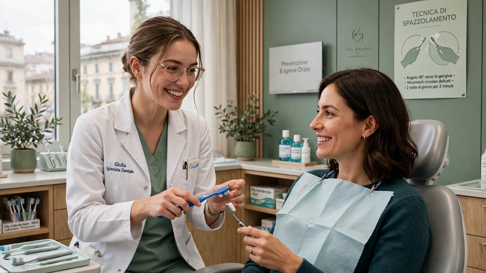

01
Igiene e prevenzione

Cos'è
La seduta di igiene professionale rimuove placca e tartaro dove lo spazzolino non arriva. Include il controllo delle gengive e indicazioni sugli strumenti da usare a casa.
Per chi è
Per tutti, adulti e bambini. È particolarmente indicata a chi ha gengive che sanguinano, porta apparecchi o impianti, è in gravidanza o fuma.
Come si svolge
L'igienista usa ultrasuoni e strumenti manuali, poi lucida le superfici dei denti. Se c'è sensibilità, si può applicare un anestetico locale in gel o si procede per zone.
Quanto dura
Circa 45–60 minuti. Di solito si ripete ogni 6 mesi; l'intervallo può essere diverso in base alla situazione delle gengive.